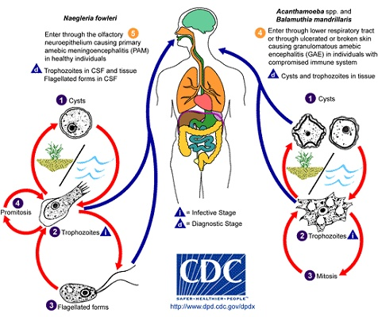
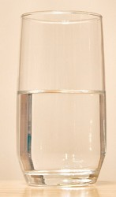

大悲水
冯冯
这样贵重的大悲水给我，当然感激莫名，慌忙迎接，恭恭敬敬，把瓶供奉在佛座观音像下，以待有缘病人来领用。
有人从某一名山恭请了一瓶大悲水，趁来加之便，带来送给我，给我布施给有需要的病人，某某名山的大悲水是远近驰名的，每天有几十辆旅游巴士，载了香客去朝拜及恭请大悲水。据大多数人说，名山的大悲水是异常灵验，能治有病，化解灾难，遇难成祥，凡事如意，因此每天求水者数以千计，得水者无不视为拱珍。
怎料细看之下，塑胶透明瓶中的水，竟然是混浊不清的，而且已有微细的青苔！
“怎么一回事？这是真的大悲水吗？是怎样取来的？”问他。
“是我亲手请的，”答道：“是在佛殿上供桌旁边的大水瓶，由法师亲手倒给我的。”
“大瓶的大悲水是清澈的吗？”
“好像是清的，当时没仔细看。”
“它的大悲水是怎么来的呢？”
“不清楚，”答覆：“有人说是寺后山涧汲取的水，一向多年都是从那条山涧汲取的。”
“有没有煮开过才放入大瓶来布施呢？”
“不清楚，没问，也没人提起过。”
“你的小瓶子，是寺里给的吗？”
“是的。”
“当时看到它是干净的吗？”
“好像很干净。”
“你请水到今天已经多久？”
“四天。”
“四天就长青苔？不可能吧？看来那水不是新鲜的，可能已在大桶中很久了，也很可能是在山涧的溪水的底，取水人太多，把溪水刮到溪底了，溪底是可能有青苔的。”
某寺与我有些认识，打电话去问此事，当家师说：“不可能！本寺的大悲水，从来未发现过混浊长青苔。”她有些不悦。
“溪水煮开过没有?”
“不需要煮开，山涧的水是最清的！从来没人喝了生病，只有把疾病消除！这是观音菩萨所赐的杨枝净水呀！你怎可以怀疑它？太不恭敬了！”她挂了电话。
把瓶水送去温哥华的水质检验所，十天之后，一封英文信来了：“所付标本，属于硬水，但含有阿米巴变形虫与大肠菌与多种微生物，详见附件报告，查该水质是不适合饮用。”
再打电话去给某寺，及将报告电传过去，对方的答覆比上一次脾气更大：“居士这样坏本寺名誉，否定观音神力，是何居心？本寺多年来布施大悲水，受惠者何此万千之众，从未有人投诉本寺大悲水不清洁或有病菌。希望居士别随便对外散布谣言。有误众生来求大悲水治病！”
“法师，我并未对外宣布，只是想建议贵寺，把山涧水煮沸，消毒之后才放入桶中布施，以策安全，这也是保护贵寺，免得有人向政府卫生当局控告贵寺。”
“观音菩萨佛法无边，神通广大，怕什么病菌？居士这样失去信心，妄言妄语，真是罪过，必须自负因果！”卡勒一声，电话挂断了！

先把溪水煮开消毒，举手之劳，可是她不肯，好坚持溪水无微生物。此事我也不敢再管。她信佛信到变成迷信。迷信到了愚昧地步，可能有一天，会有信徒饮了这些山涧水而泻肚子，甚至于把寄生虫吃到肚子内，阿米巴变形虫侵入肝脏，死了还不知是什么原因！此一段真事，并不是要推翻“大悲水”。相反地我是要维护大悲水！我已向另外的多所名山巨刹请求务必煮沸了水才用于做大悲水，他们大多数都乐于实施，并且还谢谢我细心关照。只有上述那一处名山，一直顽固不改。最近电视新闻，朝拜该寺的香客，数百人上吐下泻，寺方责怪是香客自用午餐不洁，卫生官说可能是山涧“大悲水”含大肠菌，该寺主持断然否认。而且要求卫生官公开道歉，这样顽固的出家人，也真少见！她坚持必须用山涧的生水才有效，不肯用自来水或冷开水，怎么观也不听！大悲水的神效，众所周知，但是，水中若有病毒细菌，恐怕多少也影响了神效吧。何况，说实话，大悲水的神效，其实不在水中，而是在信徒心中！大悲水只不过是假借“水”来持念观音菩萨圣号与大悲咒，以水来坚信心，并非水中有什么神力在内，神力是由信徒信心接触的，有没有水，并无分别。不过，世人着相又迷信，没有水，就不生信心，不坚信念，竟误认必须有水来持咒才有效，其实，效力是持咒的信念产生的神力感应，你有至诚，念一声观音菩萨也就获得加持，你若不诚心，持念一亿次也无感应，饮下二十加仑“大悲水”也只是饮下普通的“水”，何圣之有！
 大悲水，其实人人可以在家持念大悲咒供奉杯水于观音菩萨座下，就成大悲水，也不拘持念大悲咒的多少遍，一遍不算少，万遍不算多，最要紧是虔诚持念，亲自持念！无须远涉关山去什么名山拜求，名山的大悲水，是法师或诵经班预先持念过的，当然有效，但是，你自己亲自虔念，更有神效，你可以自己在家中祈求大悲水，也可以教别人持念大悲咒祈求大悲水，没有注册专利的，人人可以祈求的，观音菩萨寻声救苦，在任何所在都听得到信徒祈求的。非信徒祈求也会灵，只要是虔诚，也不需要什么特别的仪轨，只须持一瓶煮开过的清水供在供桌上，你自已合掌跪着虔念大悲咒与观音菩萨圣号，加一句：“弟子某某，恳求观音菩萨加持大悲水！”，就成了，当然，要用消过毒的自来水或泉水，可别用未消毒的山涧水或鱼塘水或荷塘水，那些水中很多微生物！
这样说，不是叫你别去朝拜名山，只是教你可以自己在家中佛桌下祈求，你若能去朝山，也自然得到朝山的喜悦。至于那些商业化的一些庙宇，变相卖钱的“大悲水”，你就不如买一瓶消过毒的矿泉水来自己在佛座下祈念吧！正信佛教的寺庙布施大悲水是不收钱的，你要捐香油，是随缘乐捐。问题是，现在很多外道的神庙也在卖大悲水！像卖汽水似的。不察之下，还以为是佛寺呢！
原载《佛网》网站
2000 年 ── 2002 年